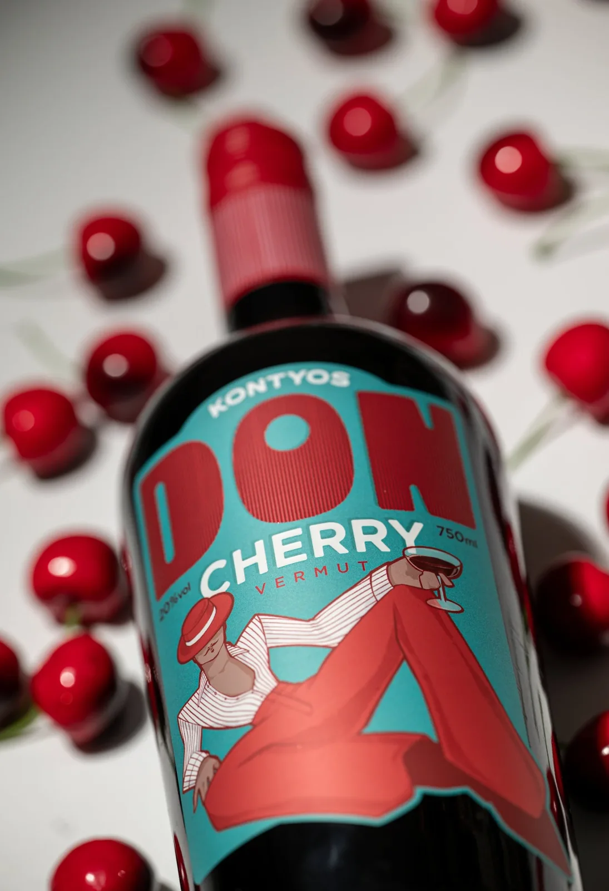

Don Cherry édes meggyvermut ÉDES MEGGYVERMUT · 0,75 L
Prémium minőségű édes meggyvermut: friss meggy ágyon érlelt 100% különleges minőségű meggybor, dió pálinka, fűszerek hozzáadásával!
- ALKOHOL
- 20% vol
- KISZERELÉS
- 750 ml
- EGYSÉGÁR
- 6.653 Ft/l
- TARTALMAZ
- szulfitot, kinint
- Várható kézbesítés
- GLS 3–5, MPL 1–3 munkanap
- Szállítás
- 1 800 Ft-tól · 20 000 Ft felett ingyenes
- Fizetés
- Bankkártya (SimplePay), átutalás, utánvét · regisztráció nélkül is


LEÍRÁS
Don Cherry édes meggyvermut
Prémium minőségű édes meggyvermut: friss meggy ágyon érlelt 100% különleges minőségű meggybor, dió pálinka, fűszerek hozzáadásával! Hogyan készítsd el a tökéletes meggyvermutot? Két külön út a meggyvermut élvezetéhez. Válaszd az alkalmadhoz illőt! Klasszikus (hűsítő aperitif) : Ha az esti beszélgetésekhez keresel egy finom, lágyan fűszeres italt.Tölts meg egy poharat roskadásig jéggel, helyezz rá egy narancskarikát. Öntsd rá a 8 cl prémium meggyvermutot . A frissesség és az aromák tökéletes harmóniáját kapod. Intenzív Meggy Shot ("Shout" Élmény): A gyors, brutális ízrobbanás kedvelőinek. Egy 5 cl-es pohár aljára helyezz egy meggyszemet ( amit a webshopunkban megtalálsz ). Önts rá 4 cl meggyvermutot. Idd két kortyban, hogy a végén a meggyszem felerősítse az ízélményt! Szulfátot és kinint is tartalmaz !
PARAMÉTEREK
- Egységár
- 6.653 Ft/l
- Űrmérték
- 750 ml
- Alkoholtartalom
- 20 %
- Palackzárás
- csavarzáras
- Súly
- 1360 gramm
- Technológia
- Különleges érlelésű, minőségi vermut
KÖTELEZŐ ADATOK
- Megnevezés
- Don Cherry édes meggyvermut
- Alkoholtartalom
- 20 %
- Névleges térfogat
- 750 ml ℮
- Összetevők
- lásd a termék címkéjén
- Allergén
- szulfitot tartalmaz · kinint tartalmaz
- Előállító
- Kontyos Borház Kft., 6773 Klárafalva, Kossuth u. 183.
- Tételazonosító
- a címkén
Alkoholtartalmú italt 18 éven aluli személy részére nem értékesítünk. Fogyaszd mértékkel!
Leírás
Prémium minőségű édes meggyvermut: friss meggy ágyon érlelt 100% különleges minőségű meggybor, dió pálinka, fűszerek hozzáadásával! Hogyan készítsd el a tökéletes meggyvermutot? Két külön út a meggyvermut élvezetéhez. Válaszd az alkalmadhoz illőt! Klasszikus (hűsítő aperitif) : Ha az esti beszélgetésekhez keresel egy finom, lágyan fűszeres italt.Tölts meg egy poharat roskadásig jéggel, helyezz rá egy narancskarikát. Öntsd rá a 8 cl prémium meggyvermutot . A frissesség és az aromák tökéletes harmóniáját kapod. Intenzív Meggy Shot ("Shout" Élmény): A gyors, brutális ízrobbanás kedvelőinek. Egy 5 cl-es pohár aljára helyezz egy meggyszemet ( amit a webshopunkban megtalálsz ). Önts rá 4 cl meggyvermutot. Idd két kortyban, hogy a végén a meggyszem felerősítse az ízélményt! Szulfátot és kinint is tartalmaz !
Paraméterek
- Egységár
- 6.653 Ft/l
- Űrmérték
- 750 ml
- Alkoholtartalom
- 20 %
- Palackzárás
- csavarzáras
- Súly
- 1360 gramm
- Technológia
- Különleges érlelésű, minőségi vermut
Összetevők, allergének
lásd a termék címkéjén
szulfitot tartalmaz · kinint tartalmaz
Kötelező adatok
- Megnevezés
- Don Cherry édes meggyvermut
- Alkoholtartalom
- 20 %
- Névleges térfogat
- 750 ml ℮
- Összetevők
- lásd a termék címkéjén
- Allergén
- szulfitot tartalmaz · kinint tartalmaz
- Előállító
- Kontyos Borház Kft., 6773 Klárafalva, Kossuth u. 183.
- Tételazonosító
- a címkén
Alkoholtartalmú italt 18 éven aluli személy részére nem értékesítünk. Fogyaszd mértékkel!
Szállítás
MPL csomagautomata / PostaPont / posta: 1 800 Ft, GLS csomagpont: 2 100 Ft – 20 000 Ft felett ingyenes. GLS házhoz: 2 400 Ft, 25 000 Ft felett ingyenes. Személyes átvétel Klárafalván. Regisztráció nélkül is rendelhetsz.


ÍGY IDD
Két külön út a meggyvermut élvezetéhez. Válaszd az alkalmadhoz illőt!
VÁSÁRLÓI VÉLEMÉNYEK

A PÁRJA
Don Cherry gyümölcse
0,25 l édes meggyvermut és 100 g magozott meggy egy üvegben.